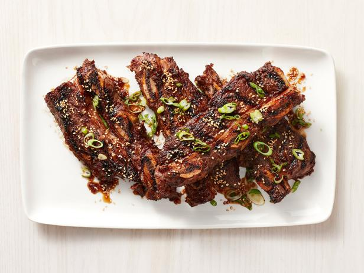

Korean BBQ Short Ribs

Korean-style short ribs can be found at most Asian markets. The cut, also known as "flanken," refers to a strip of beef cut across the bone from the chuck end of the short ribs.
Unlike American and European-style short ribs, which include a thick slice of bone-in beef, Korean-style short ribs are cut lengthwise across the rib bones.
The result is a thin strip of meat, about 8 to10 inches in length, lined on 1 side with 1/2-inch thick rib bones.
The thin slices make for fast cooking on the grill.
Ingredients
- 3/4 cup soy sauce
- 3/4 cup water
- 3 tablespoons ssesame oil
- 1/2 large onion, minced
- 1/4 cup minced garlic
- 1/4 cup dark brown sugar
- 2 tablespoons white sugar
- 1 tablespoon black pepper
- 3 Pounds Korean-style short ribs (beef chuck flanken, cut 1/3- to 1/2-inch-thick across bones)
- Pour soy sauce, water vinegar, and sesame oil into a large, non-metalic bowl. Whisk in
onion, garlic, brown sugar, white sugar and pepperm whisking until sugars dissolve.
Submerge ribs in the marinade. Cover the bowl and refrigerate for 7 to 12 hours; the
longer the better.
- Preheat an outdoor grill for medium high heat.
- Remove ribs from marinade and shake off excess; discard marinade.
- Cook on the preheated grill until the meat is no longer pin, 5 to 7 minutes per side.
- Serve and Enjoy!